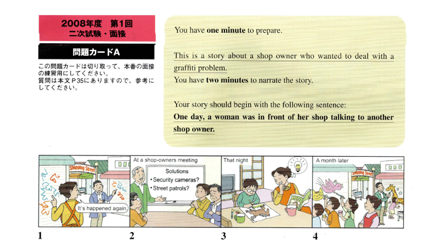

SubjectIDを入力してください。
録音ファイルの保存確認が完了しました。 ご協力ありがとうございました。 この画面を閉じてください。

録音内容を確認し、ファイルをラップトップにも保存してください。
録音ファイルをダウンロード
音声を最後まで聞いてください。 音声が終了すると、次へ進めます。
録音ファイルを処理しています。
音声を最後まで聞いてください。 音声が終了すると、自動的に次のTrialへ進みます。